As life upended throughout the world and routines shuttered to contain the threat of the coronavirus pandemic, journalism students in two News, Narrative & Design II courses went from reporting on the lives of New Yorkers to telling stories about their hometimes over 36 hours.
From the communion of family meals, to the found solace of a skatepark, to chalked inspirational messages written on sidewalks, five students wrote about how the coronavirus pandemic has affected life where they are now.
In Laguna Beach, California
By Samantha Vogel
The beaches, the sole spectacles I look forward to each time I return home to Laguna Beach, California, are largely closed. So are the hiking trails, restaurants, and art exhibitions. What had defined Laguna Beach as home to me has faded, or so I thought.
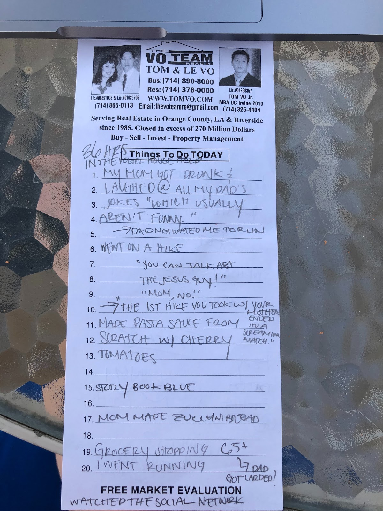
Evidence of a collective family brainstorm for 36 hours in our lives. Notes taken following dinner.
Photo by Samantha Vogel.
My family and I have found some solace through routines, with our meals playing a larger role.
Coffee and Oats
Coffee is prepared each morning by either my mother, Sarah, 61, or my father, Randy, 65. I start my morning with a large glass of water, followed by a cup of coffee, or two. Coffee in the Vogel household is taken three ways, each distinct for each member in the family.
My coffee: Drip with Oat Milk Barista Blend (the Califia Farms — trust me).
Sarah’s coffee: Black. My mother believes that this is the only way to truly enjoy the flavor of coffee. I would like to add that she used to pour cream into her coffee, but stopped a number of years ago and hasn’t cared too much for it since.
Randy’s coffee: My father, as his wife and children have observed, takes his cream with a touch of coffee.
With our coffee, we usually have a hearty bowl of oatmeal, served the same way each morning.
My oatmeal: About ½ cup of oats, topped with one banana, cinnamon, almond milk, and, when I am in need of a health kick, flax seeds.
Sarah’s oatmeal: About ½ cup of oats with blueberries and raspberries, and a splash of soy milk.
Randy’s oatmeal: One cup of oats with soy milk. His being a simple take on breakfast.
After our usual breakfast, we each go off to create a daily, modified, routine.
Moving
After breakfast, my father goes for a mountain bike ride or to his office. My mother goes hiking, or she practices self-led yoga at home, or she works paper cranes to send to healthcare workers. I like to go into town for a run.
I run three miles on Glenneyre, a street that runs parallel to Pacific Coast Highway along the California coast. Or I go on a four-to-five mile run along the highway and catch a glimpse of the ocean. I ran varsity cross country for Laguna Beach High School, and could run through the streets of Laguna with my eyes closed. I know which side of town has more stop lights (North Laguna), and which side has less hills (South Laguna). I know not to run through Heisler Park on a warm day, unless I wish to take part in a human obstacle course. And, I know how to connect each route back to the high school.
We live within the city lines of Laguna Beach, about four miles outside of the main town, and near some several hiking trails. The Nix Nature Center, a wilderness park of the 133, which is a canyon road that winds to the freeway, remains accessible, but it is no longer open to the public.
It is imperative, I believe, to go outside every day, to get fresh air, even through a walk around the neighborhood. I try to spend as much time as I can outside. I often sit in my backyard to work on class assignments , read, eat breakfast, or attend my online classes.
Finding a new daily project has helped me and my family immensely during quarantine.
On a recent Saturday, bored from spending the morning inside my house, I decided to help my dad with trail maintenance. My mom drove us to the side of the 133. My father and I hiked into Nix — me with my film camera, him with the pickaxe and shovel — 20 minutes up one of the trails.
I tried my hand at using the pick axe. I found it both exhausting and cathartic.
Communion
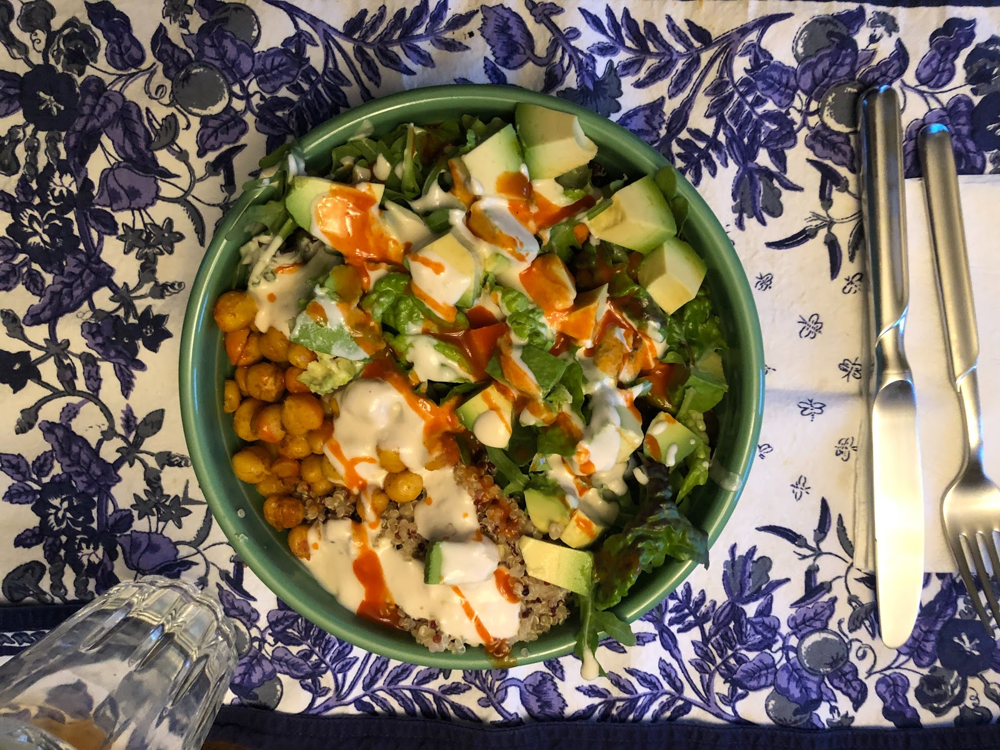
My signature salad and homemade dressing, made for a family dinner.
By Samantha Vogel
In Thomas C. Foster’s
How to Read Literature like A Professor, he states that dinner, or the sharing of a meal, is an “act of communion”, a coming together and bonding of all persons who share the same meal. I agree with Foster. Each night when my family sits down to share the food we have prepared, we engage in discussion. Since asking one another what we did that day seems redundant, we find ourselves sharing stories, discussing politics, music, movies — all things we might never have considered had it not been for the circumstances. Meals, a simple routine, nonetheless, a uniting time.
I cook dinner for everyone at least three to four nights a week. I have always enjoyed cooking, but have recently found more pleasure in making a meal.
I also enjoy creating my own recipes, mastering the simplicity first.
Here’s my recipe for homemade pasta sauce:
What you will need:
A box of small tomatoes (I used heirloom, but any kind will do)
Pasta (I used angel hair, but, again, any kind
Garlic
Onion
Olive Oil (or if butter is preferred/ what you have/ use that!)
Dried Basil (or fresh)
Honey (or brown sugar, maple syrup, agave)
Dice the onion and crush garlic into a medium pan (or any larger pan will do) with olive oil over medium heat. Stir for about two to four minutes, or until the onions start to appear translucent. Next add the tomatoes. (I recommend using more tomatoes than I had first used, which was one box of heirloom). Add water and cover with a lid until tomatoes become soft and begin to cook down. Then, with whatever stirring utensil at hand, press down on the tomatoes for the sauce and for the tomatoes to cook down further. Add white wine. I used about a ⅓ cup water and ¼ cup wine (my mom keeps Trader Joe’s two-buck chuck, or Charles Shaw, for cooking). I will also mention the wine is optional and the recipe tastes fine without it. Cover the pan and let the wine cook down. Once the wine has started to cook down and the sauce emulates more of a sauce-like consistency, add in the basil, about a teaspoon (if no one was aware by now, I don’t measure ingredients, but I taste as I go) and salt, about a teaspoon. Then add about a ⅛ to ¼ teaspoon of honey or whatever sweetener available (this is also not necessary to the recipe). Let cook for about 10 more minutes or until a desired consistency. Cook the pasta, then add it to the sauce, mix to coat the pasta and viola! Dinner.
The Vogels give my pasta recipe two-thumbs up. I have also been asked by them to prepare the dish again.
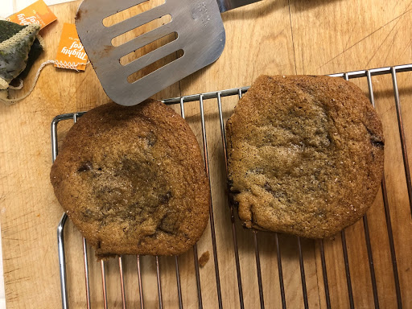
Fresh baked brown butter chocolate chip cookies. By Samantha Vogel.
Meals have become an important aspect of how my family is fairing during the quarantine. Simple routines like sitting down at the dinner table, sipping wine, discussing the news of the day, or deciding what movie from our voluminous DVD collection we should watch next, have provided us with moments of order during this uncertain time.
To close out my day, I have been alternating between watching a movie and journaling. I have also been re-reading the Harry Potter series. This time marks the third time.I started a few weeks ago and am now finishing book five of seven.
I have found more satisfaction in finishing small writing or photography projects I have assigned myself during quarantine. The true joy in creating art, I have found, is that it’s a personal reflection of how I am coping, and that I need not broadcast it to the world to try and make others see or understand it.
The night, I find, is best enjoyed with a fresh brewed cup of peppermint tea.
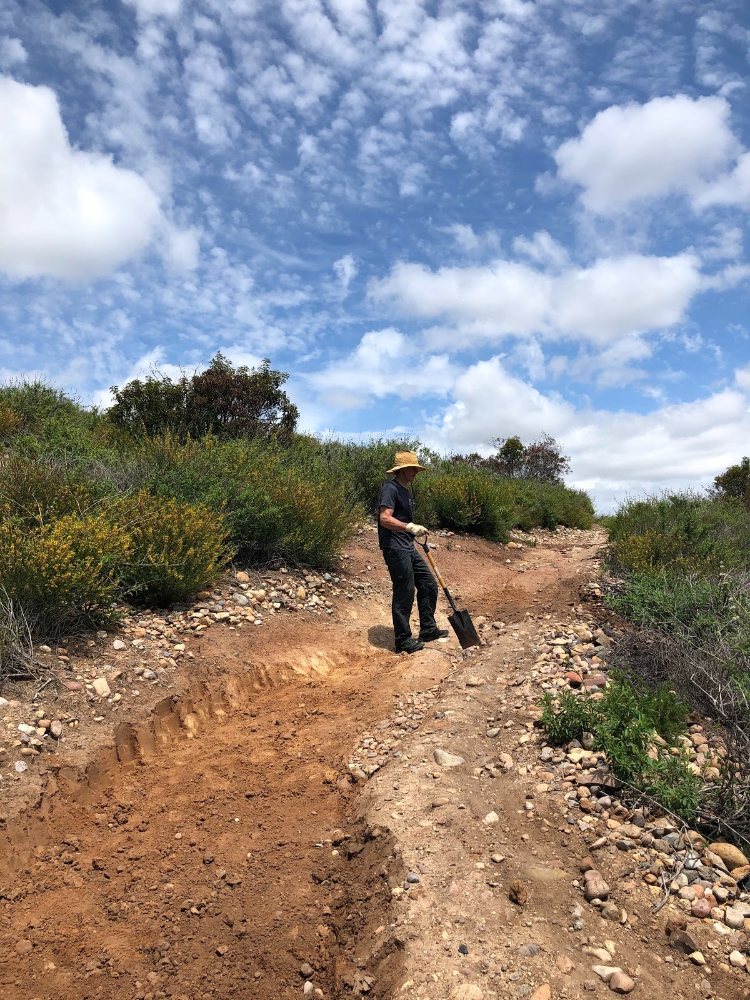
Randy Vogel, 65, does trail work at the Nix Nature Center. The repaving of the eroding trails helps mountain bikers, like himself, to ride on smoother terrain.
By Samantha Vogel.
In Punta Las Marías, Puerto Rico
By Ana T. Rodriguez
When I walk outside with one of my three dogs, I tend to see the same amount of cars on the road as one would before quarantine began. For about a week in the beginning of April, governor Wanda Vazquez said that depending on the last number of your license plate, you can drive one day yes and one day no. During that week, the streets looked strangely deserted. When the governor decided to ditch that restriction, the streets quickly returned back to normal, with cars consistently passing by all day.
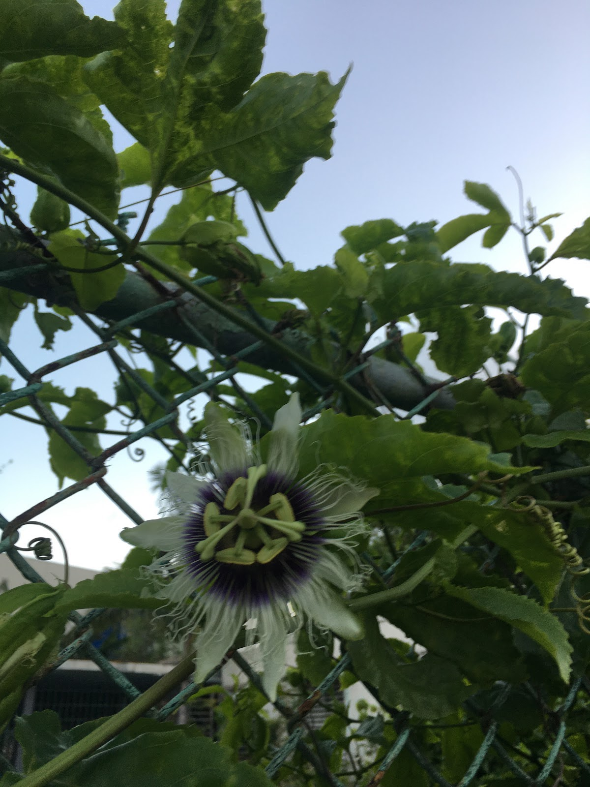
The passion fruit flowers on the path toward Ocean Park.
By Ana T. Rodriguez.
I am in a neighborhood of San Juan named Punta Las Marías. When I step out of the urbanization, I can either walk right towards Ocean Park, where passion fruit flowers have bloomed along one of the neighbor’s fences. If you keep walking, you will turn right back when you reach El Último Trolly, a beach that sits right before reaching the Ocean Park neighborhood. The police are always there and will either try to flirt with you, or tell you to go home as people are not supposed to walk outside during this time of quarantine. Usually, one cannot walk along the sand from El Último Trolly to Ocean Park’s beach because of high tides. Now, the tide is low, and the two shores have connected. Walking past there at the moment will ensure the police stopping you on their four track vehicles.
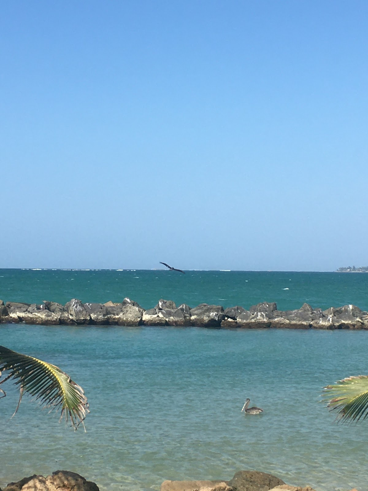
Pelicans in the waters at an empty beach.
By Ana T. Rodriguez.
If you walk to the left from Punta Las Marías, you will walk towards Isla Verde. The beach there is now off limits as well, and the shores have eroded a lot since quarantine. Before reaching the deeply missed El Churry, a food truck that sells tripletas at 3 a.m., you see the skate park to your left. This skate park was created a few years ago by a guy called Chemi Rosado-Seijo, and he recently built a makeshift skate bowl in the middle. Almost every inch of cement in the park, excluding the floor, is painted or tagged. Graffiti inspired letters are all over, with names and pseudonyms painted over each other and stickers frequently seen in skate or surf shops found peeling off of walls. It is beautiful and even therapeutic to be there. The ocean is right behind it, and you don't even have to get too close to feel the breeze of the water coming from waves splashing rocks and abandoned pieces of cement. Since it is two minutes walking distance from my house, I have gone a few times to draw or paint on the concrete walls that stand alone there. I have run into the same three people each time: Joshua, Ivansito, and Friedel.
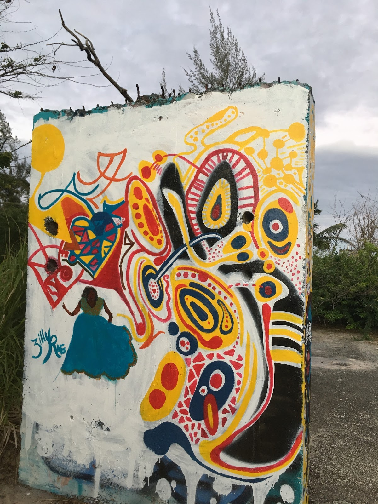
The wall in the skatepark I began painting on with my neighbor Adriana. A lady that we met at the park named Zilly painted the lady dancing Bomba. She recommended us to paint a boombox in the left bottom corner so that the colorful shapes express the beat she is dancing to.
By Ana T. Rodriguez.
I met Joshua the first day I went to paint alone. We greeted each other by waving our hands at each other from a distance. It was awkward. He is 26 and appreciates art and painting deeply, but expressed to me that he has lost inspiration and motivation throughout the years. Every time we speak, I find myself giving him a pep talk, as he can be very hard on himself and assume he will not get things accomplished. He tells me he is torn between staying on the island, where his friends, family, and favorite beaches are, and going back to Florida, where he has two cars and a home, but no friends. I do not know how to help him, but I try to cheer him up by sharing painting supplies with him. He is very stubborn and insists on going to the beach everyday, even if it is just to sit there. The police have screamed at him about three times already as he skates on the street after the 7 p.m. curfew.
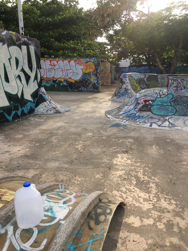
The Skate Park and a gallon of water that Ivansito brought is full. He drank it all in less than an hour, forgot it and left it there.
Photo by Ana T. Rodriguez.
Ivansito, I have known since we were in middle school. He is 19, about my same height of five feet, and an amazing skater. For years, I have seen videos of him that he shares on his social media of him jumping down entire flights of stairs on his skateboard and landing as if nothing happened. He tells me that he has been going to the skate park almost every day, practicing consistently. He is always one to motivate others around him to practice hard, which I think is part of what makes him an amazing skater. He is one of those people who remind me how small San Juan is, as I have dated two of his friends in the past and one of his neighbors, a boy who lived in his same building. He tells me that he escapes to the skate park when his mom asks him to go to the gas station to buy bread and snacks.
Friedel, I have known since the beginning of high school. We had mutual friends, and I remember that he was one of my roommate’s first kisses. He is 20 years old and also reminds me of how small San Juan is. He recently taught himself how to paint and is very talented at it. His works are abstract. He uses dark tones and smudges a marker on canvas, along with spray paint and acrylic to make scenes of characters in dark rooms with televisions, lamps, distorted faces and many other elements he imagines. One of the strangest things of all on the island now is that we no longer kiss each other on the cheek, as we would normally greet each other. Now it's a fist bump. Most times, not even that.
I recently reconnected with Adriana, one of my neighbors who I went to elementary school with. We have been taking walks with our dogs together. We often talk about being thankful for being able to at least walk our pets and to have each other to talk during these isolating times. Later today, we might go to the skatepark and try to finish a painting we recently started, just for fun, on one of the big cement walls. We also have on our agenda to make dance choreography. We have been listening to a repertoire of house music, salsa, reggae dub, Afrobeats, and Reggaeton on our walks that have motivated us to take time during this upcoming summer to dance, as it is something we both have loved since we are little. We might just also fill up our water bottles with red wine for our next walk, which always includes deeply existencial talks about things such as connections throughout human history, fear leading to failure, and why music and dance are so important in this existence.
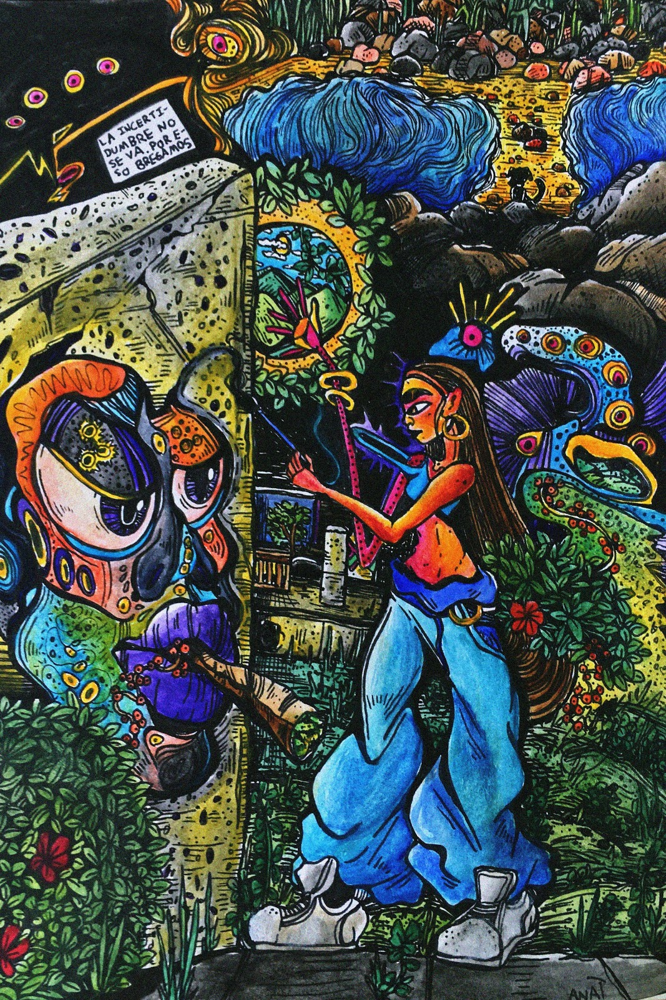
This is the drawing of me painting in the skatepark.
By Ana T. Rodriguez.
In Seattle, Washington
By Reiko Grant
Seattle is a city known for its gloomy, persistent rain. It is also known for its stronghold in the technology industry. But those like me who have grown up in Seattle, or who have raised a family here, will tell you that it is much more.
Situated between the Pacific Ocean and the Cascade Mountain Range, Seattle has an array of restaurants, art museums, and evolved music scenes.The tourist season comes in late spring and hits hardest during July and August when the rain temporarily ceases. Tourists come for the Space Needle, the seafood, Pike Place Market, where the mongers throw fresh caught salmon in the air, and art exhibitions such as Chihuly Garden and Glass, located in the downtown Seattle Center.
But for the first spring since the city can remember, tourism is not a peak annoyance. Especially downtown, where last summer I would navigate crowds in the narrow brick streets. Instead the roads are cleared. Traffic has quieted. The skies are magnificent come sundown. The clouds are of cotton candy consistency, taking on pale reds and purples as the sun sets over the tree-covered hills of South Seattle.
With restaurants, music venues, and other deemed non-essential businesses closed due to quarantine orders, in 36 hours, outside of sleep, memories can be dredged up, and a sense of having taken our city for granted is heightened.
On a recent Friday afternoon, after a series of five online classes via Zoom, my 15 year-old brother Whit and I went from our mom’s house to our dad’s. We brought along aspirin and ginger tea with the hope of easing my dad’s stomach ache. Three hours later, after a walk to the lake, dotted with cherry blossom trees and tall grasses, we returned home to find our dad in pain. Attempting to stand up straight and walk to the kitchen, he could barely speak. An acute pain took over his body, rooted in the right side of his stomach. I called 911.
Once the paramedics left with our dad, Whit and I called our grandmother to let her know what happened, and nervously cleaned the house. We received messages from our neighbors. They offered support, food, supplies, anything we might need, after they heard the sirens and witnessed the flashing red lights. As we waited at home for news of our father’s condition, Whit and I talked about what we were doing with our dad last spring. We were eating celebratory tiramisu at Tutta Bella for Whit’s middle school graduation, and also spicy baked chickpeas at Mioposto Pizzeria. We were watching films at Ark Lodge Cinemas in our neighborhood of Columbia City, meeting our neighbor’s month-old baby, and appreciating the company of those I’d missed while in New York, especially the Von Homeyers, a family with four boys whom we have known for nine years.
The next day, on Saturday, it is 24 hours until my dad’s release from the hospital. Whit and I, not allowed to visit him in the hospital because of the risk of coronavirus transmission, called him instead. He gave us an update: his gallbladder had ruptured, which explained the pain, and he would need surgery to remove it. After the news, Whit and I went with our mom to my favorite beach, Golden Gardens, an attempt to relieve some stress.
Unlike other beaches in Seattle that sit on the edge of Lake Washington, Golden Gardens, nestled close by in the Pacific Ocean, looks west toward the San Juan Islands. It is also the only beach in Seattle with proper sand. The other coastlines filled with rocky edges. There were so few people there, and gone were sailboats that usually dot the water. We saw, for the first time, seals ducking in and out of the water close to the shore.
Being home in Seattle, the drives between houses have become more sacred. These are routes I have memorized over time. As we wind downhill, pass ancient trees toward Lake Washington, we follow south, where views of the serene water are interrupted by large houses and impressive gardens. The simplicity and beauty of the skies, the clouds, and the gardens that I had taken granted all my life are now more meaningful. for the first time in a long time, I feel a sense of gratitude and love for Seattle. With so much of the city unavailable, I have learned to appreciate the parts of the city that have remained accessible and, in that way, offer a sense of calm during a time of uncertainty.
Whit and I discuss and list the places we will go once these places hopefully open again, and when our dad is healthy, spots that our family doesn’t often share with others, places we have coined as “ours” over the years. Manao, which serves street Thai food, is our go-to for spicy eggplant, fluffy rice, and pad see ew. There is also Momiji, our favorite Japanese restaurant. 20 Oz Tea is for perfectly soft boba. There’s also The Frye Art Museum, The Elliott Bay Book Company, Frankie and Jo’s ice cream, and, on Wednesday nights, the farmer’s market. These little spots that hold so many memories we hold close to us, like meeting my friend Charlotte and her little sister Stella for fresh berries, Indian food, and ice cream at the farmer’s market.
Still, the feeling of isolation isn’t constant. There are still moments of cheer as strangers greet and wave to each other from opposite sides of a street. The streets where our mom and dad live have cultivated their own unique sense of community. There are happy hours that follow social distancing guidelines, and neighbors share meals, baked goods, and even toilet paper with one another. And, despite missing so much due to the coronavirus pandemic and self-quarantining, the hidden parks Whit and I discovered long ago are still available to us — the gardens, the hidden lookouts over the shimmering lake, and the small unmown lawns bursting with daisies.
In Summit, New Jersey
By Hannah Zipf
Named for its location at the top of the Watchung Mountains, the town of Summit, New Jersey is a suburban area that longtime residents find worth the climb. The six square miles that make up the homes and businesses of Summit offer a mix of city chic in modern glass buildings and of outdoor adventure with hiking trails and public gardens.
Summit boasts an eclectic downtown that fosters a variety of boutiques and restaurants. In warmer months, small business owners keep their doors propped open and routinely offer smiles to passersby. But in recent weeks, life in Summit has come to a disturbing halt. As residents isolate themselves in their homes, the streets have fallen silent.
On March 21, New Jersey Gov. Phil Murphy directed all non-essential businesses like salons, theaters, and shopping malls to close indefinitely. On April 7, the governor issued the same closures for state parks and forests. With social distancing in mind, Summit residents have since stepped outside their homes to chalk their sidewalks and driveways, crafting inspiration for others and themselves.
Fences, pavements, windows, and front yards have become the most unlikely canvases. Once decorated, they are a community symbol for resilience and hope. Posters boasting uplifting quotes hang outside homes, and the same messages are written on pavements where they are viewed by passing cars or joggers. These creative efforts are reminders to people that they are not alone during this time of uncertainty.
#ChalkYourWalk has more than 30,000 tags on Instagram.
Morris Avenue is one of Summit’s main streets with homes, schools, and businesses. It has also become a block of inspirational cards. On a clear evening in late April, my brother, William, 17, who attends Summit High, carried a large dusty bucket of chalk out from the backyard shed. Trudging along the asphalt driveway, he scoped out what he felt was the perfect place to work. He dropped the bucket at the edge of the driveway, which hit the ground with a loud thud. Reaching for pastel colors of blue, pink, orange, and green, he began to craft his work. An hour later, as the sun began to set, he packed up his bucket, and wiped his dusty hands on his gym shorts. Heading inside, returning home, he left the words “Spread Love” in slanted, capital letters on the edge of our driveway. He said he hoped it would bring a smile to a stranger’s face.
Art has proven to bring the people of Summit closer together. There are flowers, smiley faces, and messages such as “Stay Positive” and “Summit Strong”. #ChalkYourWalk has also been used to show appreciation for healthcare workers, with notes thanking them that can be seen throughout the town.
“Seeing those sweet drawings makes stepping out of the house worth it,” said Jacki Norwood, 53, a Summit resident. Norwood said she especially appreciates the efforts of her neighbors during the coronavirus pandemic. “It’s the simple things that can make you smile.”
In Temecula, California
By Elizabeth Fisher
As in most places in the world, Temecula, California’s main attractions in wineries, golf courses and the state’s largest casino are closed. This is due to regulations in Riverside County in response to the coronavirus pandemic. Still, the valley town has much to offer during these idle days. Located in between California’s two largest cities, and less than an hour inland from the nearest beach, Temecula is a town of just over 100,000 people. One aspect that makes it unique are the hills that encircle the valley and ground the city in nature.
The open space amid the town’s housing developments makes room for small-scale wineries and horse ranches. Family owned restaurants like Le Coffee Shop compete with the many big chain dining options. However, such small businesses have faithful customers. One reason: they prepare delicious meals, like burritos, sushi, in front of customers, connecting patrons to their food and the community.
While facing stay-home orders, Temecula residents try to maintain their lifestyles and community amid the coronavirus pandemic. Below is a guide to make the most of 36 hours quarantined in Temecula.
Friday
1:00 p.m. Tacos to-go
Begin with lunch at Aztek Tacos, a small restaurant centered on Mexican food. During the pandemic, it is open daily for takeout only, from 9 a.m. to 8 p.m. and a face mask is needed to enter. The shop makes tortillas on-site, which are best enjoyed when eating one of the shop’s popular burritos, such as the steak and shrimp, pollo asada or breakfast burrito. The shop also offers delicious tacos and tamales. I ordered the California Burrito, which has carne asada, french fries, sour cream, guacamole and cheese wrapped in a warm flour tortilla, and a homemade Horchata.
4:30 p.m. Citrus grove stroll
Take a walk along a path of orange groves located in the hills behind Morgan Hill Park. Although public, the trail is a secret to some locals. The walk is just beyond a housing development, which seems to disappear once enclosed in the full and fragrant orange trees.
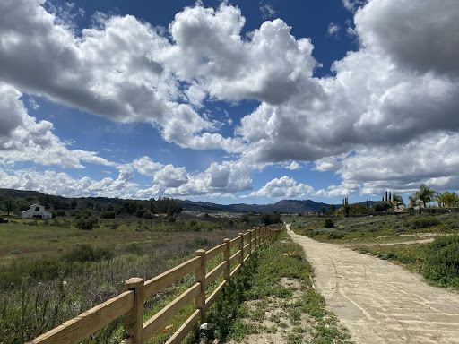
The end of a trail in Morgan Hill.
By Elizabeth Fisher.
7:00 p.m. Sushi at sunset
Have a picnic dinner while taking in the sunset. Get some take-out sushi from Hana Sushi, a well-loved Temecula small-business, where chefs typically prepare hand cut rolls at the bar in front of customers. Since the quarantine, customers can no longer watch chefs roll sushi, however, the refreshing cucumber salad and the flavorful signature rolls will taste as though they were made minutes before pick up. Then, drive to the top of one of the hills off of Jedediah Smith Road and face west to watch the Temecula sun melt into the valley’s green hills.
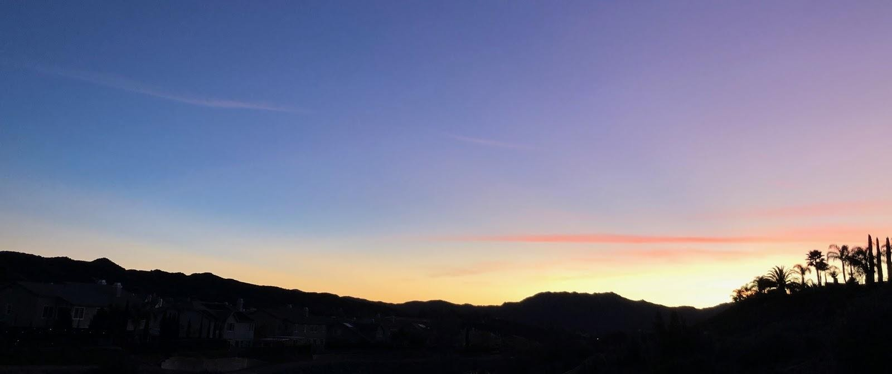
Sunset in the Temecula valley.
By Elizabeth Fisher.
Saturday
8:00 a.m. Old Town farmers market
Every Saturday morning, local farmers and food vendors gather in Old Town Temecula to sell fresh organic fruits and vegetables. Usually, the market also offers art, handmade soaps, candles and lotions. However, the wares are now limited to food vendors only. They offer spring produce, fresh baked bread, Temecula olive-oil, foods like tamales, crepes and spanakopita, and stunning sunflowers. Speaking with customers at a distance, farmers also offer avocados, oranges and an assortment of berries.
10:00 a.m. Quiche, coffee and conversation
Situated a few streets over is Le Coffee Shop, a French bakery and cafe that serves handmade pastries. It also has croissants, quiches, muffins and crepes, and coffees made with organic beans from Central and South America and roasted locally. Enjoy your order while sitting on a bench near-by, distanced from a quarantine companion or as you read The White Album by Joan Didion, a book of sentimental, yet cynical meditations on California.
12:00 p.m. Windows-down drive
Take a drive through one of the city’s rural roads with the car windows down and the radio volume up. Be sure to drive carefully, as these roads are winding and steep. Travel deeper into the surrounding valley, down Pala Road toward U.S. Highway 76, to be surrounded by shaded greenery. Or, drive along Pauba Road for a wide-ranging look at some of Temecula’s wineries and horse ranches amid the rolling hills.
3:00 p.m. Yoga, pool-side
Temecula yoga studios are closed, but many instructors are offering online classes. I take my mat pool-side in my backyard to accentuate a calming space. I tune into a class, centering myself amongst the Temecula breeze. After completing a few sun salutations in the sunlight, I consider that I may never need to return to a yoga studio again.
6:30 p.m. Cook and sip
Cook dinner with the foods bought from the farmers market. While cooking, sip wine from one of Temecula’s many wineries, which can be bought at local grocery stores and wine shops.
8:00 p.m. Dinner party
Enjoy the meal, and maybe another glass of wine. You can also set a theme for the night with a specific playlist, such as disco, Italian summer, or the 70s. Wear clothes that compliment the music, or read a book that fits with the theme. You can even invite others to join you.
9:30 p.m. Movie themes
End the night with a movie that accompanies the dinner theme, or just watch whatever feels most comforting during this time.
Sunday
9:00 a.m. Morning with a view
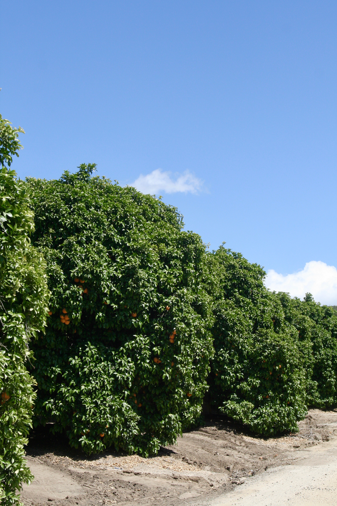
Citrus groves in Temecula, California.
By Elizabeth Fisher.
Join Temecula’s exercise community by taking a run or walk along an unbeaten path. You will be rewarded with blue-skied views and wildlife sightings —bunnies, roadrunners and lizards. I do not time myself, in case I want to stop and smell the many types of flora that align the trail.
11:30 a.m. Gratitude brunch
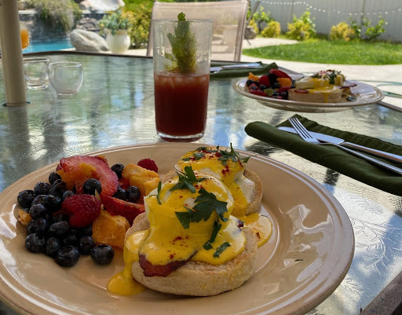
Homemade eggs benedict with a side of fruit salad made with farmer’s market produce for Sunday brunch on my patio.
By Elizabeth Fisher.
Finish the weekend with a decadent brunch. Include the berries from yesterday's trip to the farmer’s market. Make fresh-squeezed orange juice or mimosas. Before eating, whatever it is I am grateful for during this uncertain and unfortunate time, I share it with others or in my journal for myself. . Some days, it is the company I am with. Other days, it is the blue sky or the food on my plate. Most often, it is another day to identify the good in life. There is so much.